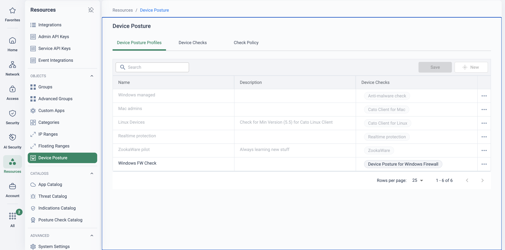
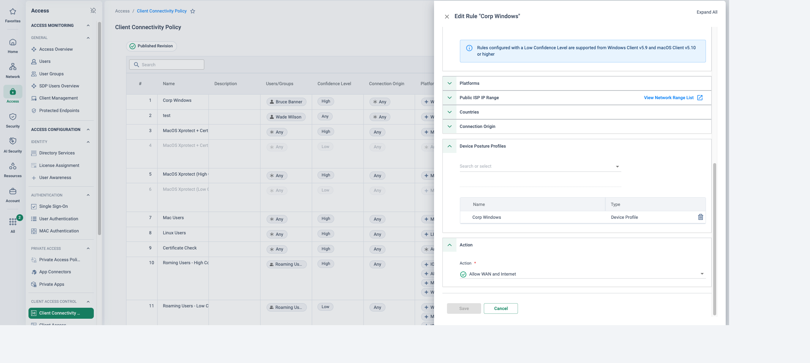
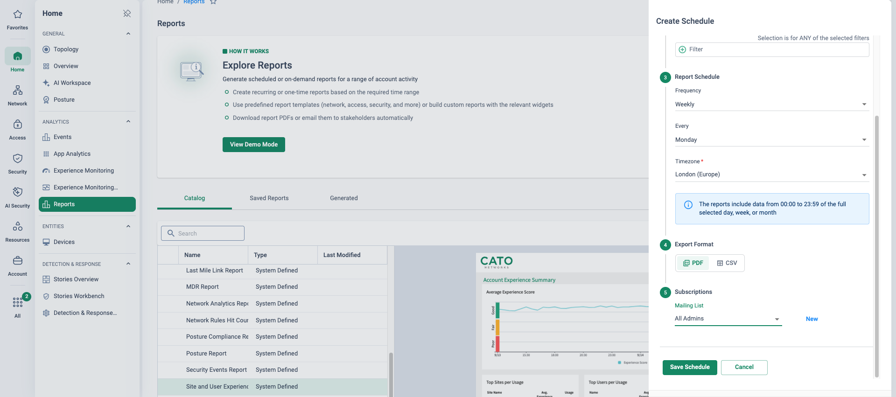

Why this matters — and why now
ISO/IEC 27001:2022 certifies an Information Security Management System: clauses 4–10 (context, leadership, planning, support, operation, performance evaluation, improvement) are mandatory, organisational, and nothing a vendor can perform for the customer. Annex A's 93 reference controls are selected by the customer's own risk assessment and recorded in their Statement of Applicability. The honest — and more credible — claim is that Cato helps implement and evidence the Annex A controls the customer selects, never that it "makes you compliant". The clause 4–10 map lives on Achieving Compliance; this page is the Annex A depth.
The 2022 edition restructured Annex A into four themes — Organizational (37 controls), People (8), Physical (14) and Technological (34) — and introduced eleven controls that did not exist in 2013. Five of them are core SASE capabilities: A.5.23 information security for use of cloud services, A.8.9 configuration management, A.8.12 data leakage prevention, A.8.16 monitoring activities and A.8.23 web filtering. Every organisation certifying or recertifying today is on the 2022 edition: under IAF MD 26 the transition closed on 31 October 2025, and every accredited 2013 certificate expired or was withdrawn on that date regardless of its printed expiry. A 2013 certificate cannot be revived — a lapsed organisation starts a fresh Stage 1 and Stage 2 against 2022.
Two ideas carry the whole conversation. First, the auditor tests operation, not intent: is the control enforced consistently, and can the organisation show records of it over time? Second, the evidence burden scales with the number of consoles: one policy engine and one event store shrink the collection job across a dozen-plus technological controls that would otherwise mean exporting from a stack of point products. Device posture is the sharpest example of both, because the endpoint is where most Annex A technological controls are hardest to prove.
Stage 2 wants operation, records and consistency
The certification journey is well trodden: scope the ISMS (clause 4.3), assess and treat risk (6.1.2/6.1.3), produce the SoA and implement controls, run the ISMS long enough to generate records (auditors typically expect at least three months of operation), then a Stage 1 readiness review of the documentation and a Stage 2 certification audit six to eight weeks later. The certificate runs three years with annual surveillance audits in years one and two and recertification in year three. Stage 2 is where control stacks fail: auditors walk processes, interview staff and examine technical evidence — "the operational reality of the ISMS, not just its documented intent".
Demonstrable, consistent enforcement
Not "we have a policy" but "here is the rule, here is it firing on real traffic, here is what happens to a device that does not meet it" — the same answer for the office, the home worker and the contractor.
Records over time — and proof they are reviewed
Practitioner guidance is to hold around twelve months of logs, and storing them is not enough: auditors want evidence that logs are reviewed, anomalies handled and outcomes recorded. A snapshot on audit day is not a control.
Evidence sprawl from point tools
A tool per control means an export per control — endpoint console, VPN concentrator, web proxy, DLP, firewall manager — each with its own clock, identity model and retention. The audit becomes a correlation project.
The endpoint is the hard part
Look down the Technological theme and most of the controls that touch a laptop — A.8.1 user endpoint devices, A.8.5 secure authentication, A.8.7 protection against malware, A.8.9 configuration management, A.8.12 data leakage prevention — are the ones organisations find hardest to evidence. The policy says "encrypted disk, running EDR, patched OS"; the proof is usually a spreadsheet exported from the endpoint tool, disconnected from whether the device was actually allowed onto the network in that state. What an auditor wants to see is the link: the baseline, the enforcement gate, the outcome for a device that fails, and the record of it — continuously, not once at login.
“When Stage 2 asks how you know a non-compliant laptop cannot reach the finance system — today, not at last login — where does the answer live?” · “How many consoles do you export from to evidence one Annex A control for twelve months?” · “Which of the eleven new 2022 controls are on your SoA as 'implemented' — and which are still 'planned'?”
Device posture as the enforcement gate, evidence as a by-product
Cato's device posture is not a separate agent or an integration project: the Cato Client already on the device evaluates Device Checks, bundled into Device Posture Profiles, and those profiles gate whether the device may connect at all and what it may reach. Checks inside one profile combine with AND; multiple profiles on one rule combine with an implicit OR. Since 7 August 2026 the checks re-run continuously, every 10 minutes by default — which is the ISO sentence: the control is enforced all the time, not proven once.
The eleven check types, and the Client each needs
The Knowledge Base documents eleven Device Check types. Third-party agent checks (Anti-Malware, Firewall, Patch Management, DLP) are matched through the OPSWAT library, so the customer's existing EDR, MDM or endpoint DLP is a drop-down entry, not an integration. The Device Certificate check verifies a user certificate signed by a CA associated with the account — the KB's own recommended zero-trust pattern gates the connection on it. An Intune MDM compliance state can also be a check (Windows, macOS excluding multi-NIC devices, Linux). The KB's version table carries a twelfth row — "Device Checks applied for users in an office" (Windows 5.7, macOS 5.8, Linux 5.3) — which is not a check but the capability to apply the same profiles to devices connecting behind a Socket, so the office and the home worker meet one baseline. Minimum Cato Client version per OS, per the KB (dash = not supported):
| Device Check type (KB name) | Windows | macOS | Linux | iOS | Android | Control it most directly evidences |
|---|---|---|---|---|---|---|
| Anti-Malware | 5.2 | 5.2 | 5.1 | — | — | A.8.7 Protection against malware |
| Firewall | 5.4 | 5.2 | 5.1 | — | — | A.8.1 User endpoint devices · A.8.20 Networks security |
| Disk Encryption | 5.5 | 5.6 | — | — | — | A.8.1 · A.8.24 Use of cryptography |
| Patch Management | 5.5 | 5.2 | 5.2 | — | — | A.8.9 Configuration management |
| Device Certificate | 5.5 | 5.4 | 5.1 | 5.3 | 5.0.1.115 | A.8.5 Secure authentication · A.8.1 |
| DLP (endpoint agent present) | 5.9 | 5.4.3 | 5.2 | — | — | A.8.12 Data leakage prevention |
| Cato Client Version | 5.0 | 5.0 | 5.0 | — | — | A.8.9 Configuration management |
| Running Process | 5.11 | 5.7 | — | — | — | A.8.1 · A.8.7 (an EDR or agent that must be running) |
| Registry Keys | 5.11 | — | — | — | — | A.8.9 (Windows build or hardening key present) |
| Property List (plist) | — | 5.7 | — | — | — | A.8.9 (macOS configuration present) |
| OS Version | 6.8.2 | 6.1 | — | 5.9 | 5.6 | A.8.9 · A.8.1 (minimum supported OS) |
Source: Creating Device Posture Profiles and Device Checks (KB, accessed 24 Sep 2026) and Configuring Intune MDM Compliance Checks for Device Posture. The last column is this page's mapping, not the KB's — the control a check evidences is decided by the customer's SoA.
![CMA Resources Device Posture page on the Device Checks tab: a catalogue of checks with Name, Category, Vendor and Criteria columns — SentinelOne, Cato EPP and CrowdStrike anti-malware checks with Real time protection enabled, a CrowdStrike Falcon version gate above 7.03.X, Windows and macOS firewall checks, Intune and Jamf patch-management checks, McAfee and Forcepoint endpoint DLP checks, Cato Client minimum-version checks, disk-encryption checks on C: and Macintosh HD, a Windows registry key on CurrentVersion, a macOS plist path and a device certificate check](../assets/img/cma-posture-checks-catalog.png)
Where posture applies
Client Connectivity Policy — the front door
Access → Client Connectivity Policy — Ordered rules scope users and groups, countries, platforms and Device Posture Profiles; actions are Allow WAN and Internet, Allow Internet only or Block WAN and Internet, over a final implicit ANY ANY block. A device that fails the profile never establishes a tunnel.
Internet and WAN Firewall rules — conditional access
Device Posture Profiles and device attributes (category, type, model, OS, manufacturer, OS version) are matching criteria in both rulebases, so a rule can allow the finance segment only from a device that passes the profile. For Clients that cannot run a check you choose whether the rule skips them or applies to them.
Always-On — no opt-out for remote workers
Access → Always-On Policy — Rules that keep users connected can be scoped by posture profile; Client Connectivity Policy and Device Authentication take precedence. Bypasses are controlled artefacts — an admin one-time passcode valid up to 15 minutes, or a logged disconnect reason. Not supported for Linux Clients.
Check Policy — continuous, not point-in-time
Resources → Device Posture → Check Policy — Three modes: Continuous checks, even when disconnected (recommended), Check on connect and while connected, or One-time check. Since 7 August 2026 continuous checking at the recommended 10-minute interval is enabled by default for all accounts; the interval can be set between 5 and 1,440 minutes. Needs Windows Client 5.15+ or macOS Client 5.9+.
What happens when a device fails
At connect, the Client does not connect to the Cato Cloud and shows the user an error; a Details button lists the specific unmet requirements. If a device fails a periodic check while connected, the Client disconnects — same message, same Details. Each failure creates a Block event with Event Sub-Type Client Connectivity Policy and the reason "Device fails to meet the Device Check", carrying the same unmet-requirement detail — the record the auditor wants beside the rule. There is no warn-but-allow action for posture in the Client Connectivity Policy: the graduated middle ground is Allow Internet only, or a posture-scoped rule in the Internet or WAN Firewall with that rulebase's own actions. Say so — it is a feature in an audit, and a design decision in a rollout.
Device Posture is everything above: endpoint checks evaluated by the Cato Client, configured under Resources → Device Posture. Account Posture is different: a set of best-practice checks Cato runs against the CMA configuration itself every 24 hours — is TLS inspection on, is MFA enforced for admins, is a risky rule left open — scored as an Account Score under Home → Posture, with each check carrying a Label that maps it to ISO 27001:2022, NIST SP 800-53 Rev. 5 or GDPR. The Posture Compliance Report is generated from the account-posture checks. Both are ISO evidence; they are not the same control. The "Posture" event type in Home → Events is the account one.
Where the auditor's artefacts come from
The second half of the story is that none of this evidence is assembled by hand. Each surface below is a standing feature of the platform; the PoV runbook later turns each one into a dated artefact for the pack.
Posture Compliance Report — the ISO-labelled report
Home → Reports — Maps controls from ISO 27001:2022, NIST SP 800-53 Rev. 5 and GDPR to the relevant Cato account-posture checks, to show coverage, gaps and remediation priority. One-off or recurring (daily, weekly or monthly), stored in the Cato Cloud, emailed or downloaded. The sibling Posture Report scores the configuration against Cato's own recommendations (KB).
Account Posture page — score, trend, Review & Resolve
Home → Posture — The Account Score (checks passed and failed), a score-over-time trend, and a checks table with All / Account Posture / SaaS Security tabs; each check has a Label for its framework, a Review & Resolve wizard and an AI "Guide me" walkthrough. The catalogue lives at Resources → Posture Check Catalog — (KB).
Audit Trail — 12 months of attributed change
Account → Audit Trail — Every configuration change by an administrator or the API — additions, deletions and edits of rules and settings, with before/after values for certain policies. Twelve months retained, viewable three months at a time; entries can take several minutes to appear (KB). This is A.8.9 and A.5.15 change evidence without a CAB spreadsheet.
Events and the Data Lake — the retention conversation
Home → Events — Every enforcement decision from every engine is an identity-attributed event; export up to 250,000 events per query over a 31-day maximum range, or stream via Event Integrations to a SIEM. Base retention is 3 months with 2.5 million events per hour; additional units extend retention to 12 months — sized on Data Lake sizing. For A.8.15 that is "3 months included, buy up to 12".
Policy revisions and Publish — change control by design
Each admin edits in a private unpublished revision; nothing takes effect until Publish and the Publish Revision confirmation. Paired with the Audit Trail this is the who/what/when an auditor asks for under A.8.9 (KB). The revision model does not document rollback to a previous published revision — the Audit Trail is the attribution record; do not claim more.
Admin MFA, SSO and RBAC — the console is itself in scope
Account → Roles & Permissions — Admin authentication is SSO (recommended), Cato credentials, or Cato credentials plus authenticator-app MFA — enabled by default for new admins and always on for accounts created after 10 December 2023; with SSO, MFA belongs to the IdP. Nine predefined roles (Editor, Viewer, Network Admin, Security Admin, Access Admin, Regional Viewer, Restricted Viewer, Logistics Admin, AI Security Sensitive) plus custom roles with page-level Edit/View-only/None and entity scoping; permissions cannot be split per tab within a page (KB).
Annex A controls: what the auditor wants, what Cato does, what to show
The centrepiece. Control numbers and names are the 2022 edition; "what the auditor wants to see" is synthesised from published control guidance and the evidence expectations above, not quoted from ISO/IEC 27002. Every row is a "supports and evidences" claim — applicability is the customer's SoA decision, and the final column names an artefact you can actually produce from the CMA. Controls introduced in 2022 carry a marker.
| Annex A control (2022) | What the auditor wants to see | Cato capability | Evidence artefact in the CMA |
|---|---|---|---|
| A.5.14 Information Transfer | Transfer rules plus technical enforcement (encrypted paths, controlled channels) and logs of transfers | Encrypted Client and Socket tunnels; Data Control rules on uploads; endpoint DLP posture check | TLS Inspection and Data Control rulebases; Data Control events with file name/type; the DLP check in the profile |
| A.5.15 Access Control | A topic-level policy mapped to enforcement points; periodic review records | Client Connectivity Policy plus WAN and Internet Firewall rulebases scoped by identity, posture and device attributes | Published rulebases (exportable); Audit Trail entries for each review-driven change |
| A.5.16 Identity Management | Lifecycle of identities, unique IDs, IdP integration — the lifecycle itself lives in the IdP/HR | SCIM/IdP-provisioned users and groups drive every rule; users disabled at sync | Access → Users showing SCIM origin and status; group membership referenced by rules (design: Identity Integration Design) |
| A.5.17 Authentication Information | Credential and MFA policy with enforcement records | Admin SSO/MFA for the CMA; user SSO in the access path | Account → Login Restrictions and Access → Single Sign-On settings; admin list with authentication method |
| A.5.18 Access Rights | Provisioning, review and revocation; logs showing rights actually changed | Group-driven rules so a rights change is an IdP change; RBAC for admin rights | Audit Trail (rule and role changes); a leaver's disabled user record beside their last event |
| A.5.23 Information Security for Use of Cloud Services New in 2022 | Cloud-service inventory, security requirements per service, monitoring of usage | CASB app catalogue with risk score 0–10 and compliance attributes (incl. "ISO 27001"); Application Control rules keyed on them | Cloud Apps dashboard (sanctioned vs discovered); an Application Control rule keyed on attestation attributes and its events |
| A.6.7 Remote Working | Remote-working policy plus demonstrable technical protection of remote access and session logs | Posture-gated Client Connectivity Policy; Always-On so the controls cannot be opted out of | The Always-On rule scoped by profile; Client Connectivity events per user; posture-failure events |
| A.8.1 User Endpoint Devices | Endpoint policy, posture enforcement records, and what happens to a non-compliant device | Device Checks and Profiles; Check Policy continuous evaluation; block/disconnect on failure | The profile and its checks; the Check Policy tab; a posture-failure event with the unmet requirement; the Client's Details dialog |
| A.8.2 Privileged Access Rights partial | Privileged-account inventory and allocation/review records | CMA RBAC roles and scoped custom roles; posture-conditioned WAN rules for admin segments. PAM proper is out of scope | Account → Roles & Permissions and Administrators; the admin-segment WAN rule. Say "partial" in the SoA note |
| A.8.3 Information Access Restriction | Enforced access rules, denied-access logs, reviews | WAN Firewall allowlist over a default ANY-ANY block; posture as a rule condition | The rulebase with hit counts; block events attributed to a user and rule |
| A.8.5 Secure Authentication | MFA configuration, authentication logs, lockout behaviour | SSO/MFA for users and admins; Device Certificate check as a device-identity factor | Authentication settings; the certificate check in the profile; the KB zero-trust pattern rule |
| A.8.7 Protection Against Malware | Anti-malware configuration, detection logs, update cadence, blocked-threat records | Anti-Malware and NGAM at the PoP on WAN and Internet traffic; the Anti-Malware posture check requiring the endpoint agent (and real-time protection) via OPSWAT | Security → Anti-Malware policy; Threats dashboard and malware events; the anti-malware check with vendor and version criteria |
| A.8.9 Configuration Management New in 2022 | Baseline configurations, change records, drift monitoring | The posture profile is the enforced endpoint baseline; one global policy; revisions and Publish; Account Posture checks on the CMA's own configuration | The profile; the Audit Trail with before/after values; Home → Posture score and trend |
| A.8.12 Data Leakage Prevention New in 2022 | Classification-linked DLP rules, inline enforcement, incident/block records | Data Control policy (350+ data types) inline at the PoP; DLP posture check that the endpoint DLP agent is present | Data Control rulebase; Data Protection dashboard; DLP events with matched profile — demo on Achieving Compliance |
| A.8.15 Logging | Log coverage across the estate, retention, protection, review records | Every engine's decisions in one identity-attributed event store; Data Lake retention 3 months base, extendable to 12; SIEM streaming | Event exports per control; retention licence; Event Integrations configuration |
| A.8.16 Monitoring Activities New in 2022 | Inbound/outbound monitoring, baselines, real-time alerting, threat-intelligence integration, reporting procedures | IPS (threat-feed signatures, Block or Monitor), rule tracking with notifications, XDR stories, scheduled reports | IPS policy and events; a rule's tracking and notification settings; a scheduled report in Saved Reports |
| A.8.20 Networks Security | Network security architecture, traffic controls, protection mechanisms in operation | FWaaS, IPS and anti-malware on every flow at the PoP; Firewall posture check on the endpoint | Rulebases with hit counts; Threats dashboard; the firewall check in the profile |
| A.8.21 Security of Network Services | Security features and service levels of network services — including outsourced ones — and provider monitoring | Cato is the outsourced network service: its own certifications plus Experience Monitoring views | Trust Center certificates in the supplier file (below); Experience Monitoring and status evidence |
| A.8.22 Segregation of Networks | Segmentation design, enforced policies between segments, evidence cross-segment traffic is controlled | WAN Firewall allowlist with default ANY-ANY block; LAN Firewall per site/VLAN; posture as a condition on segment access | The WAN and LAN Firewall rulebases; block events between segments |
| A.8.23 Web Filtering New in 2022 | Filtering policy, category/domain rules in force, block logs | Internet Firewall rules on application categories, custom categories, domains and FQDNs (Allow, Block, Prompt) with tracking | The Internet Firewall rulebase with hit counts; block events by category |
| A.8.24 Use of Cryptography | Cryptography policy, TLS/tunnel standards in force; key management stays customer-side | Encrypted transport everywhere; TLS Inspection policy enforcing minimum TLS version and cipher strength; Disk Encryption posture check | TLS Inspection rulebase with min-version/cipher settings; the disk-encryption check in the profile |
Sources (all accessed 24 Sep 2026): control numbers and names per the ISMS.online Annex A listing; new-in-2022 set per Advisera and Secureframe; Cato capabilities per the KB —
Configuring the Client Connectivity Policy,
Adding Device Conditions to Firewall Rules,
Protecting Users with Always-On Security,
Zero Trust Device Security With Cato,
What is the Cato WAN Firewall?,
Managing the Internet Firewall Policy,
Configuring the Anti-Malware Policy,
Configuring the IPS Policy,
Creating the Data Control Policy,
Managing the Application Control Policy,
Configuring TLS Inspection Policy for the Account,
Reference for Rule Objects,
Analyzing Events in Your Network,
Guide to Cato Data Lake,
Authenticating Admins.
Full brief with labels: _extract/research-briefs/iso27001.md.
Cato's own certifications belong in the customer's supplier file
Four Organizational controls — A.5.19 Information Security in Supplier Relationships, A.5.20 Addressing Information Security Within Supplier Agreements, A.5.21 Managing Information Security in the ICT Supply Chain and A.5.22 Monitoring, Review and Change Management of Supplier Services — ask the customer to evidence that they assessed their suppliers. A.8.21 adds security of outsourced network services explicitly. When the network service is Cato, Cato's own attestations are exactly the artefacts that go in that file. They evidence the supplier, never the customer.
As published on the Cato Trust Center (vendor self-published; checked 24 Sep 2026)
The Cato Networks Trust Center lists ISO/IEC 27001:2022, ISO/IEC 27017, ISO/IEC 27018 and ISO/IEC 27701, ISO 14001 (2026), a SOC 2 Type II report (2025, with HIPAA attestation) and SOC 3 (2025), a PCI DSS certificate (2026), a NIST SP 800-53 Rev. 5 attestation report, and badges for GDPR, HIPAA, CSA, Cyber Essentials, TISAX (AL3), C5 and ENS. The scope of each certificate — which entities and services it covers — is not public.
How to use it: do not paraphrase the list into a customer document. Pull the actual certificates and reports via the Trust Center under NDA, so the supplier file holds the issuer, scope and expiry the customer's auditor will check — and note that any supplier still presenting a 2013-edition certificate is presenting a withdrawn one.
How to run the demo
Find out where they are on the journey — pre-Stage 1, between audits, or a surveillance visit due — and which Annex A rows are "planned" on their SoA. Then run this as a loop: baseline → gate → failure → evidence → change control. Paths are the new-navigation CMA; confirm the tenant's Check Policy tab before you start, as continuous checking is the default since 7 August 2026 but a tenant may have been changed.
-
The endpoint baseline as objects
Resources → Device Posture
Open the Device Posture Profiles tab and then Device Checks. Read a profile's checks out as the auditor would — anti-malware with real-time protection, firewall, disk encryption, patch management, device certificate — and say the AND rule: the device must satisfy all of them. Then the Check Policy tab: continuous checks every 10 minutes, even when disconnected. That tab is the "continuously enforced" sentence for A.8.1 and A.8.9.

The demo's opening screen (lab tenant): Resources → Device Posture with its three tabs — Profiles, Checks and Check Policy. Six profiles, each naming the checks it demands; the Check Policy tab beside them is where "continuous, every 10 minutes" is set. -
The gate — a Client Connectivity rule that uses the profile
Access → Client Connectivity Policy
Walk the rulebase top-down: a corporate rule with the profile attached and Allow WAN and Internet; a low-confidence or profile-less rule with Allow Internet only and WAN blocked; the implicit ANY ANY block at the end. Open the rule editor to show Device Posture Profiles as a first-class condition. This is A.5.15 and A.6.7 as an enforced rule rather than a document.
![CMA Access Client Connectivity Policy rulebase, Published Revision, with columns for users and groups, confidence level, connection origin, platforms, countries, Device Posture Profiles and Action: high-confidence rules with profiles such as Corp Windows and MacOS Xprotect set to Allow Internet and WAN, low-confidence variants set to Allow Internet and Block WAN, a Linux rule with posture Any, a Certificate Check rule using a Corporate Cert profile, and roaming-user rules across iOS, Android, macOS and Windows](../assets/img/cma-ccp-rulebase-wide.png)
The front door as a rulebase (lab tenant, fictional identities): profile-gated rules allowing WAN and Internet, their low-confidence twins allowing Internet only with WAN blocked, and a certificate-check rule — read down the Device Posture Profiles and Action columns and the graduated access model is visible without a slide. 
Inside the rule (lab tenant, fictional identities): Device Posture Profiles is a condition like any other, and the action is Allow WAN and Internet — remove the profile from the device's reality and the rule no longer matches, so the final implicit block applies. -
The failure — what a non-compliant device experiences
On a demo laptop, break one check (stop the firewall service or the EDR process) and reconnect, or wait for the next periodic check while connected. The Client refuses or disconnects and the Details button names the unmet requirement. Then switch to Home → Events and filter to the Client Connectivity Policy events for that user: the same unmet requirement, timestamped and attributed. Rule, outcome, record — the three things Stage 2 asks for, in three clicks.
-
Account posture — the ISO-labelled checks
Home → Posture
Switch vocabularies deliberately: "that was the device; this is the account." Show the Account Score, the trend, and the checks table with the ISO 27001:2022 label on individual checks. Open one with Review & Resolve to show remediation is guided. For a compliance owner this is the first time a security console has spoken their language unprompted.
-
The report that generates itself
Home → Reports
From the Catalog, generate the Posture Compliance Report and open the ISO 27001:2022 section: controls mapped to checks, coverage and gaps. Then show Create Schedule — monthly, PDF, to the compliance mailing list. The close for this step: "your surveillance-audit artefact now produces itself on the first of the month."
-
Change control — the Audit Trail
Account → Audit Trail
Edit something small in the demo tenant first (a profile description), publish, then open the Audit Trail: the change, the admin, the time, and — for policies that support it — previous and new values. Twelve months retained. Pair it with Account → Roles & Permissions to show who could have made the change. A.8.9 and A.5.18 in one screen.
How to prove it in the customer's tenant
Compliance has no toggle; what a pilot can prove is that a named Annex A control is enforced on real devices and evidenced by platform-generated artefacts. Scope it to a pilot cohort (one department, ten to thirty managed laptops) and the endpoint rows of the mapping table, with the customer's ISMS owner choosing which rows from their own SoA. Agree the criteria before configuring anything, per Running a Cato PoV. The broader evidence-pack method — policy exports, rule hit count reports, the CASB/DLP rows — is on Achieving Compliance; this runbook adds the posture and evidence-retention proofs that page does not cover.
| Success criterion | What we prove | Evidence artefact | Where it lives |
|---|---|---|---|
| Posture profile enforced on the pilot cohort | Every pilot device connects only by matching a Client Connectivity rule that requires the agreed profile — checks re-evaluated continuously at the tenant's interval | The profile and its checks; the Check Policy setting; the pilot rule; Client Connectivity events for cohort users over the window | Resources → Device Posture · Access → Client Connectivity Policy · Home → Events |
| A non-compliant device is blocked and evidenced | A deliberately broken device (one check failed) is refused at connect and disconnected while connected; the failure is recorded with the unmet requirement | Client Details dialog screenshot beside the dated posture-failure event for that user | Cato Client · Home → Events |
| Posture Compliance Report scheduled and delivered | The ISO 27001:2022-mapped report is generated once, then scheduled and received by the compliance mailing list without anyone logging in | The generated PDF; the schedule row; the delivery email | Home → Reports (Catalog, Saved Reports, Generated PDFs) |
| Policy change attributed with before/after | A pilot change (adding a check to the profile, editing the rule) appears in the Audit Trail with admin, time and — where the policy supports it — previous and new values, alongside the Publish receipt | Audit Trail view filtered to the pilot window; the My Policy Changes publish record | Account → Audit Trail · Notifications → My Policy Changes |
| Evidence retention proven, not promised | A 30-day export of cohort events is produced inside the window and the retention licence covering the audit period is agreed | The dated events export (CSV); the Data Lake retention decision in the pack | Home → Events · commercial proposal |
- The ISMS owner in the workshop choosing which Annex A rows the pilot evidences from their SoA. Without them the mapping is our guess.
- Client versions per check — check the cohort's Cato Client against the minimums in the check-type table above (for example Disk Encryption needs Windows 5.5 / macOS 5.6; Running Process needs Windows 5.11 / macOS 5.7; OS Version needs Windows 6.8.2 / macOS 6.1), and Windows 5.15+ / macOS 5.9+ for continuous checks. Upgrade the cohort first or scope the checks to what the Client can run.
- OPSWAT-listed endpoint products — the customer's EDR, firewall, patch and DLP agents must appear in the Vendor drop-down of the relevant check type; confirm in the New Device Check dialog before promising a check.
- A pilot cohort and a sacrificial device — a SCIM-synced group for the cohort (see Identity Integration Design) and one laptop the customer is willing to break a check on for the failure proof.
- Licences and retention — ZTNA/SDP licences for the cohort; the Data Lake retention conversation started in week one, because the base 3 months will not cover a 12-month evidence expectation (sizing).
- No TLS inspection needed for the posture proofs. If the customer adds A.8.12 content rows, stage it first per TLS Inspection: Staged Rollout Playbook.
Configuration walkthrough
-
Build the checks from what the estate already runs
Resources → Device Posture → Device Checks
Create one check per agreed control: Anti-Malware (vendor and product from the OPSWAT list, "real-time protection enabled"), Firewall, Disk Encryption (per volume), Patch Management (the MDM agent), and Cato Client Version as the floor. Keep the first profile to three or four checks — every check is AND, and a profile nobody passes proves nothing (Creating Device Posture Profiles and Device Checks).

The prerequisite check made visible (lab tenant): the anti-malware check's OPSWAT vendor list with a vendor selected and its products enumerated. If the customer's agent is in this list, the A.8.7 endpoint check is a drop-down; if it is not, say so in week one. -
Bundle into the pilot profile and set the Check Policy
Resources → Device Posture → Device Posture Profiles Resources → Device Posture → Check Policy
Create "ISO Pilot Baseline" from the checks; note the profile name and check list in the evidence doc as the A.8.9 baseline. On the Check Policy tab confirm Continuous checks, even when disconnected at 10 minutes — the default since 7 August 2026, but confirm rather than assume; the interval is bounded at 5 to 1,440 minutes (Continuous Posture Checks (Check Policy)).
-
Week one: the rule with posture Any, tracking on
Access → Client Connectivity Policy
Add a rule above the corporate rules: source the pilot group, platforms in scope, posture Any, action Allow WAN and Internet. Nothing is gated yet; the point is a week of Client Connectivity events for the cohort so you know who would fail before anyone does. Publish and record the Publish Revision receipt (Configuring the Client Connectivity Policy).
-
Week two: attach the profile and stage the failure
Access → Client Connectivity Policy Home → Events
Edit the pilot rule: Device Posture Profiles = ISO Pilot Baseline. Publish. Now a failed check means no tunnel. On the sacrificial laptop, stop the firewall service and reconnect — screenshot the Client's error with Details open — then restore it and reconnect. Filter Home → Events to that user and export the posture-failure event beside the successful reconnect. Rule, outcome, record, dated.
-
Generate, then schedule, the Posture Compliance Report
Home → Reports
From the Catalog select the Posture Compliance Report, Generate now, and file the PDF's ISO 27001:2022 section. Then Generate ▼ → Create Schedule: monthly, PDF, subscription the compliance mailing list. The schedule row in Saved Reports and the first delivered email are both artefacts (Generating Posture or Posture Compliance Reports).

The scheduling mechanics (lab tenant, shown here on a different template): frequency, format and a subscription list, saved as a standing schedule. The pilot uses the identical drawer on the Posture Compliance Report, set to monthly — the surveillance-audit artefact on a timer. -
Capture the change record
Account → Audit Trail
Filter to the pilot window: the checks created, the profile, the rule added and then edited, each attributed and timestamped, with previous and new values where the policy supports it. The pilot's own build is the exhibit. Capture the view for the pack — the KB documents 12 months of retention viewed 3 months at a time, and entries can take several minutes to appear (Using the Audit Trail).

The publish receipt (lab tenant): My Policy Changes recording the revision as published, timestamped, with a one-click hop to the Audit Trail entry. Screenshot it for each pilot change — the Publish step and the Audit Trail together are the A.8.9 change record. -
Export 30 days of cohort events and settle retention
Home → Events
Before the window closes, filter to the cohort and export — up to 250,000 events per query, 31 days maximum (Analyzing Events in Your Network). File it as the A.8.15 artefact, then write the retention line into the pack: base 3 months included, additional units in 3-, 6- or 12-month variants (Guide to Cato Data Lake). A 12-month evidence expectation is a licensing decision, and the pilot is where it gets made.
Troubleshooting the pilot
A check never passes on some devices
The Client is below that check's minimum version (Running Process needs Windows 5.11; Disk Encryption needs macOS 5.6; OS Version needs Windows 6.8.2). Check the Client version column under Access → Users before touching the check; upgrade or scope the profile by platform.
Everyone fails — or nobody does
AND/OR semantics: checks inside one profile are AND, so one unmet check fails the device; multiple profiles on one rule are OR, so a permissive second profile lets everything through. One profile per rule in the pilot, and add checks one at a time.
The broken device stays connected
Continuous checking needs Windows 5.15+ / macOS 5.9+ and the Check Policy set to continuous; on One-time check the device is only evaluated at connect. The interval floor is 5 minutes — a failure can take up to the configured interval to disconnect.
The agent is installed but the check fails
OPSWAT matches vendor and product; a renamed product, a version below the criterion, or real-time protection disabled all fail the check. Open the Client's Details dialog — it names the unmet requirement — and compare with the check's criteria.
Linux or mobile devices behave differently
Several checks are Windows/macOS only (see the dashes in the table), Always-On is not supported on Linux, and firewall rules let you choose whether unsupported Clients are skipped or matched. Scope the cohort to the platforms the checks cover, and say so in the pack.
The failure happened but no event shows it
Filter on Event Sub-Type "Client Connectivity Policy" with a Block action, not the "Posture" event type — that one is account posture. Entries and Audit Trail rows can take several minutes to appear; re-query before assuming the record is missing.
Gotchas & exit
- There is no warn-only posture action. A device that fails the profile is refused or disconnected. The graduated path is Allow Internet only, or posture-scoped firewall rules — design the rollout around that, and use the week-one posture-Any rule to find who would fail first.
- Posture is one control family. The ISMS still needs the organisational controls — risk assessment, the SoA, reviews, internal audit, corrective action — and A.8.2 privileged access is only partially addressed. Write "supports and evidences", never "closes".
- The Posture Compliance Report is an aid, not an audit opinion. It maps account-posture checks to framework controls; it does not assess the customer's ISMS, and it does not know about device posture. Present it as coverage input to the SoA, alongside the device-posture artefacts.
- Cato's certificates evidence Cato. They go in the supplier file for A.5.19–5.22; they are not the customer's certificate. Pull them via the Trust Center under NDA rather than restating the list.
- Retention is a licence line. Base Data Lake retention is 3 months; the ~12-month expectation is practitioner guidance, not standard text, but auditors do ask. Settle it commercially before the pack claims it.
Unwinding cleanly: remove the profile from the pilot rule first (so nobody is locked out by a stale check), then disable rather than delete the rule — its events are the evidence record. Leave the checks and profile in place if the customer is proceeding; otherwise delete them, and note that every removal lands in the Audit Trail, which is a tidy closing exhibit of change control. Cancel the report schedule only if the customer asks — most keep it. Hand the ISMS owner the pack as their working paper for Stage 2: the mapping rows evidenced, the rows marked "not in pilot scope", and the retention decision.
Resources
Documentation
- Creating Device Posture Profiles and Device Checks (KB)
- Continuous Posture Checks — Check Policy (KB)
- Update to Device Posture Checks — continuous by default from 7 Aug 2026 (KB)
- Configuring the Client Connectivity Policy (KB)
- Adding Device Conditions to Firewall Rules (KB)
- Zero Trust Device Security With Cato (KB)
- Generating Posture or Posture Compliance Reports (KB)
- Reviewing Posture Checks for Your Account (KB)
- Using the Audit Trail (KB)
- Working with Policy Revisions (KB)
- Managing Admin Roles Using RBAC (KB) · Authenticating Admins (KB)
- Guide to Cato Data Lake (KB)
- Cato Networks Trust Center · Cato security, compliance & privacy
In this library
- Achieving Compliance (ISO 27001 · NIS2 · SOC 2) — the clause 4–10 map, the evidence-pack method and the CASB/DLP demo
- UK Public Sector: Cyber Essentials & NCSC CAF
- De-risking 3rd-Party & Supply Chain Access — posture inside the access policy
- Identity Integration Design
- Event Logs & the Cato Data Lake